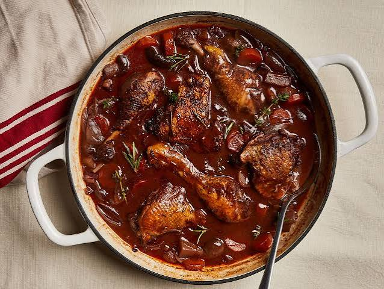

Classic French Coq au Vin

Coq au Vin is a legendary French stew where chicken is slowly braised in rich red wine, savory chicken stock, and aromatic herbs. Enhanced with crispy bacon, tender pearl onions, and earthy mushrooms, this comforting dish delivers a deep, sophisticated flavor that represents the heart of traditional French home cooking.
Ingredients
- 3 lbs (1.4 kg) chicken thighs and drumsticks
- 8 oz (225g) thick-cut bacon, diced
- 10 oz (280g) pearl onions, peeled
- 8 oz (225g) cremini mushrooms, halved
- 2 cups dry red wine (like Pinot Noir)
- 2 cups chicken stock
- 2 tbsp tomato paste
- 2 cloves garlic, minced
- 3 tbsp all-purpose flour
- Fresh thyme and bay leaves
- Salt and black pepper to taste
Instructions
- Crisp the Bacon: In a large Dutch oven over medium heat, cook the diced bacon until crisp. Remove the bacon with a slotted spoon and set it aside, leaving the rendered fat in the pot.
- Sear the Chicken: Season chicken pieces generously with salt and pepper. Sear them in the hot bacon fat until golden brown on all sides, then remove and set aside with the bacon.
- Sauté Vegetables: Add the pearl onions and mushrooms to the same pot. Sauté for about 5 minutes until lightly browned. Stir in the minced garlic and cook for 1 more minute.
- Build the Sauce: Sprinkle flour over the vegetables and stir well. Pour in the red wine and chicken stock, scraping the bottom of the pot. Stir in the tomato paste, thyme, and bay leaves.
- Simmer and Serve: Return the chicken and bacon to the pot. Bring to a simmer, cover, and cook on low heat for 45 minutes until the chicken is tender and the sauce has thickened.
Home